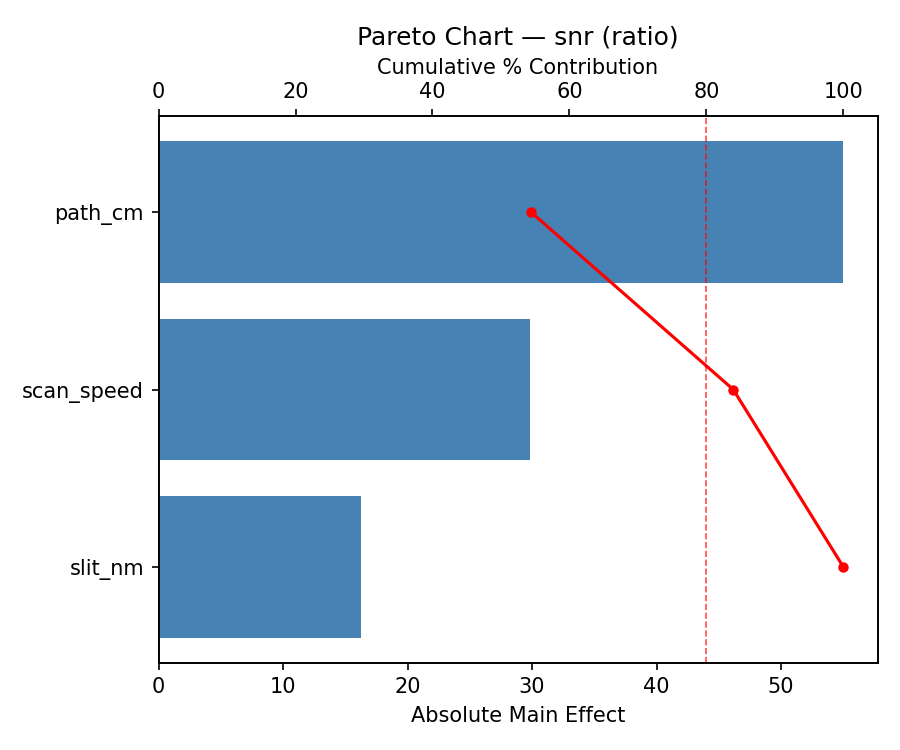
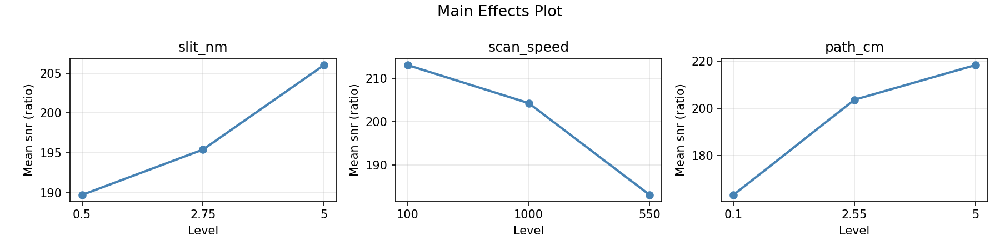
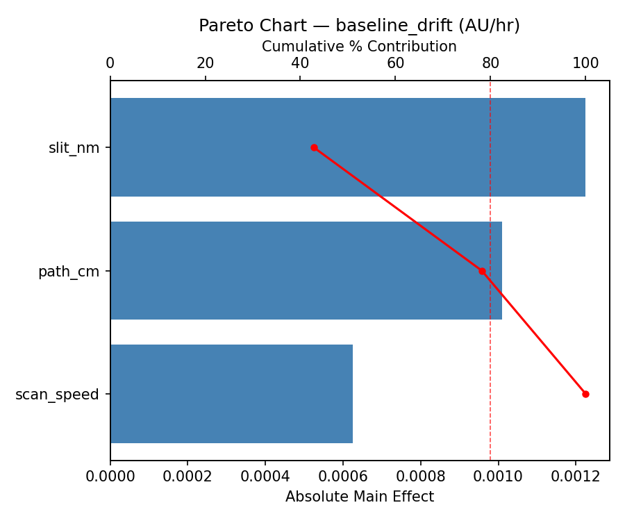
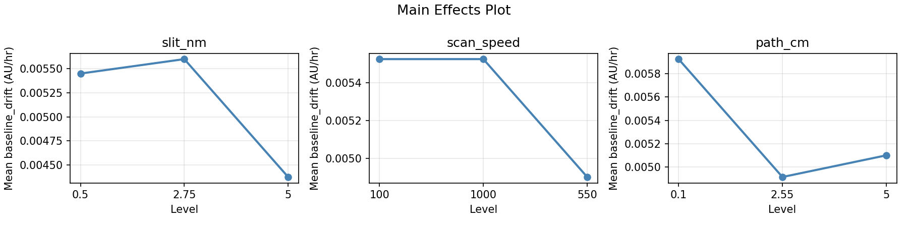
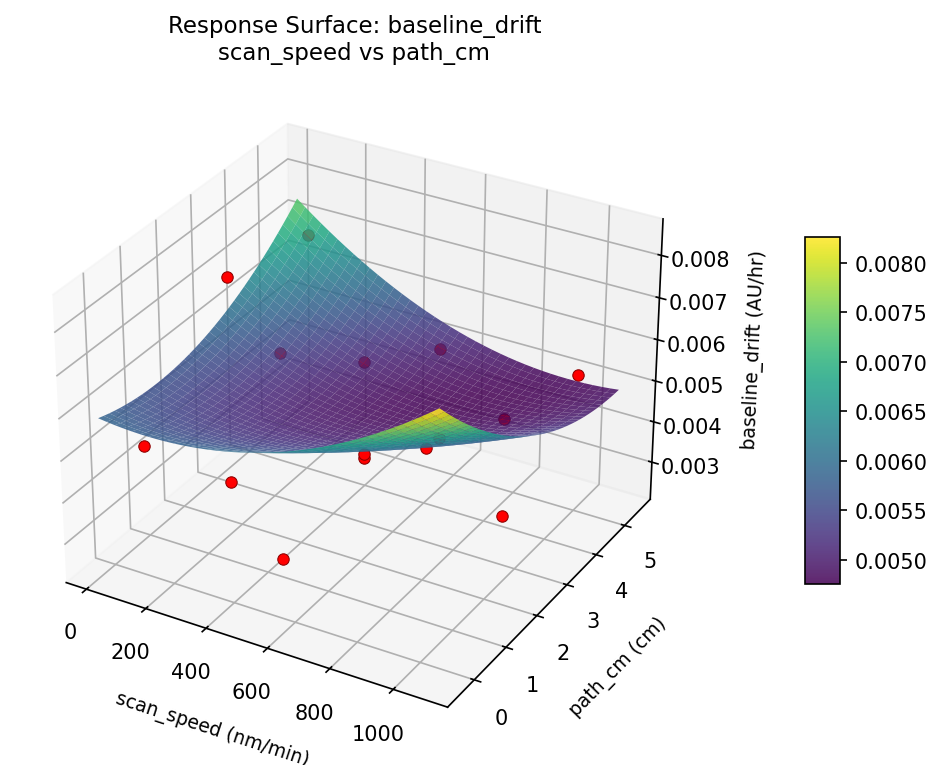
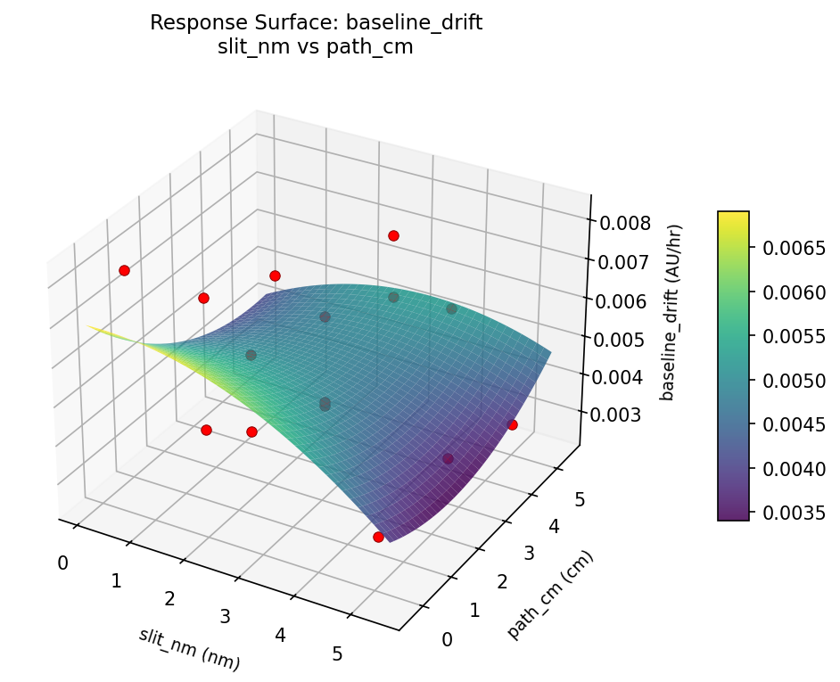
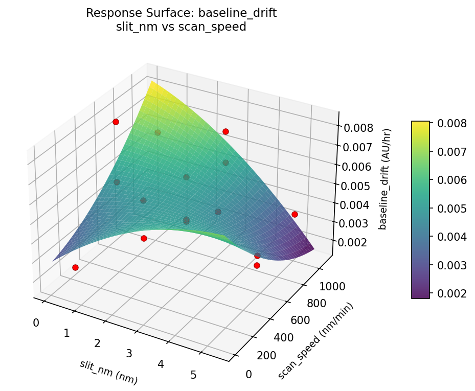
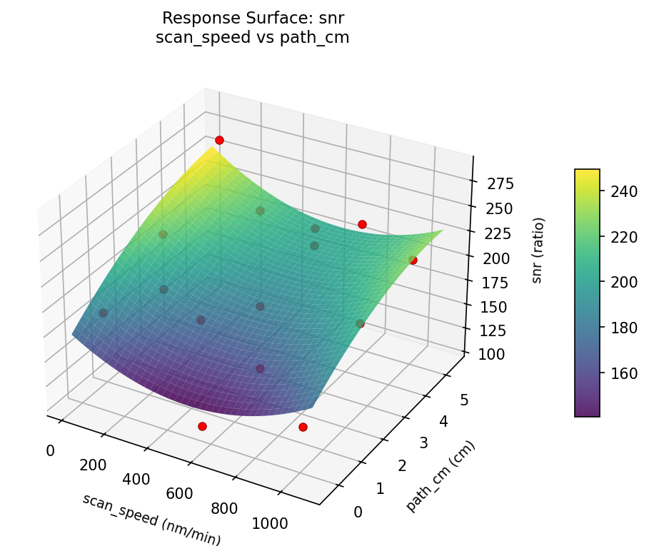
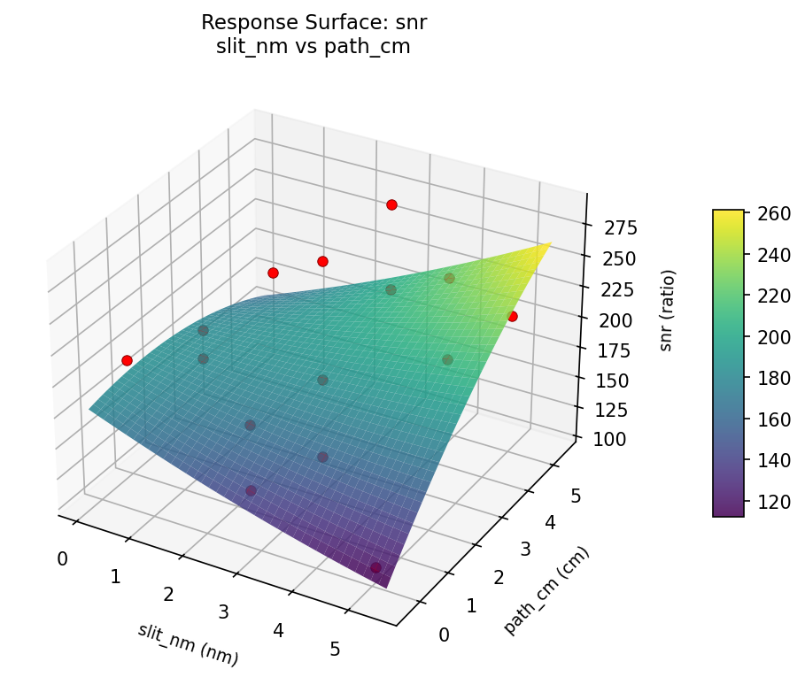
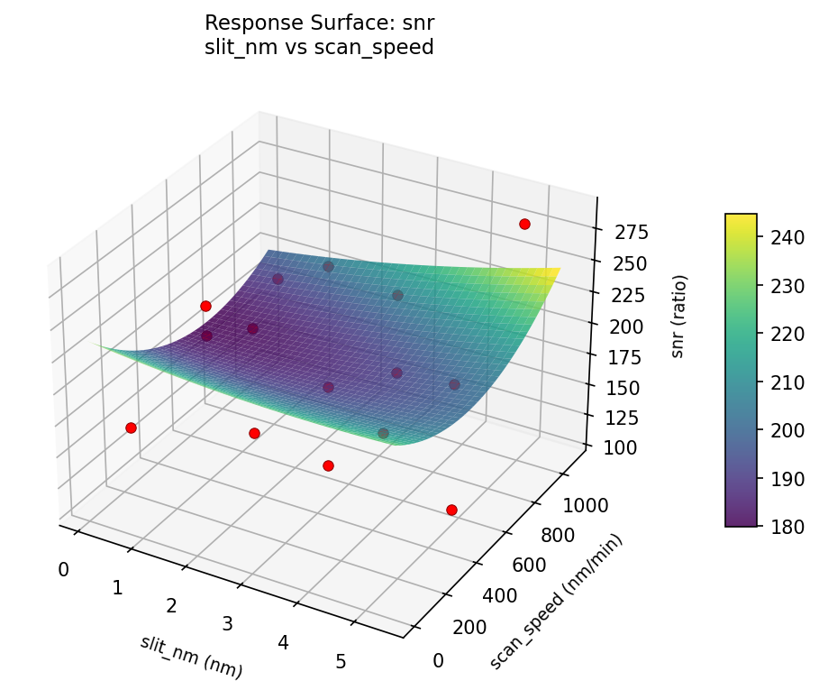

Summary
This experiment investigates uv-vis spectrophotometry. Box-Behnken design to maximize signal-to-noise ratio and minimize baseline drift by tuning slit width, scan speed, and sample path length.
The design varies 3 factors: slit nm (nm), ranging from 0.5 to 5.0, scan speed (nm/min), ranging from 100 to 1000, and path cm (cm), ranging from 0.1 to 5.0. The goal is to optimize 2 responses: snr (ratio) (maximize) and baseline drift (AU/hr) (minimize). Fixed conditions held constant across all runs include lamp = deuterium, wavelength = 260nm.
A Box-Behnken design was chosen because it efficiently fits quadratic models with 3 continuous factors while avoiding extreme corner combinations — requiring only 15 runs instead of the 8 needed for a full factorial at two levels.
Quadratic response surface models were fitted to capture potential curvature and factor interactions. The RSM contour plots below visualize how pairs of factors jointly affect each response.
Key Findings
For snr, the most influential factors were path cm (54.4%), scan speed (29.5%), slit nm (16.1%). The best observed value was 286.0 (at slit nm = 5, scan speed = 550, path cm = 0.1).
For baseline drift, the most influential factors were slit nm (42.8%), path cm (35.3%), scan speed (21.8%). The best observed value was 0.0025 (at slit nm = 2.75, scan speed = 100, path cm = 0.1).
Recommended Next Steps
- Run confirmation experiments at the predicted optimal settings to validate the model.
- Consider whether any fixed factors should be varied in a future study.
Experimental Setup
Factors
| Factor | Low | High | Unit |
|---|
slit_nm | 0.5 | 5.0 | nm |
scan_speed | 100 | 1000 | nm/min |
path_cm | 0.1 | 5.0 | cm |
Fixed: lamp = deuterium, wavelength = 260nm
Responses
| Response | Direction | Unit |
|---|
snr | ↑ maximize | ratio |
baseline_drift | ↓ minimize | AU/hr |
Configuration
{
"metadata": {
"name": "UV-Vis Spectrophotometry",
"description": "Box-Behnken design to maximize signal-to-noise ratio and minimize baseline drift by tuning slit width, scan speed, and sample path length"
},
"factors": [
{
"name": "slit_nm",
"levels": [
"0.5",
"5.0"
],
"type": "continuous",
"unit": "nm"
},
{
"name": "scan_speed",
"levels": [
"100",
"1000"
],
"type": "continuous",
"unit": "nm/min"
},
{
"name": "path_cm",
"levels": [
"0.1",
"5.0"
],
"type": "continuous",
"unit": "cm"
}
],
"fixed_factors": {
"lamp": "deuterium",
"wavelength": "260nm"
},
"responses": [
{
"name": "snr",
"optimize": "maximize",
"unit": "ratio"
},
{
"name": "baseline_drift",
"optimize": "minimize",
"unit": "AU/hr"
}
],
"settings": {
"operation": "box_behnken",
"test_script": "use_cases/193_spectrophotometry/sim.sh"
}
}
Experimental Matrix
The Box-Behnken Design produces 15 runs. Each row is one experiment with specific factor settings.
| Run | slit_nm | scan_speed | path_cm |
|---|
| 1 | 2.75 | 100 | 0.1 |
| 2 | 2.75 | 550 | 2.55 |
| 3 | 5 | 550 | 5 |
| 4 | 5 | 550 | 0.1 |
| 5 | 2.75 | 550 | 2.55 |
| 6 | 2.75 | 550 | 2.55 |
| 7 | 0.5 | 550 | 5 |
| 8 | 5 | 100 | 2.55 |
| 9 | 2.75 | 100 | 5 |
| 10 | 5 | 1000 | 2.55 |
| 11 | 0.5 | 550 | 0.1 |
| 12 | 2.75 | 1000 | 5 |
| 13 | 0.5 | 100 | 2.55 |
| 14 | 0.5 | 1000 | 2.55 |
| 15 | 2.75 | 1000 | 0.1 |
Step-by-Step Workflow
1
Preview the design
$ python doe.py info --config use_cases/193_spectrophotometry/config.json
2
Generate the runner script
$ python doe.py generate --config use_cases/193_spectrophotometry/config.json \
--output use_cases/193_spectrophotometry/results/run.sh --seed 42
3
Execute the experiments
$ bash use_cases/193_spectrophotometry/results/run.sh
4
Analyze results
$ python doe.py analyze --config use_cases/193_spectrophotometry/config.json
5
Get optimization recommendations
$ python doe.py optimize --config use_cases/193_spectrophotometry/config.json
ℹ
Multi-Objective Optimization
This experiment has conflicting objectives (snr (↑), baseline_drift (↓)). Use --multi to find the best compromise using desirability functions:
$ python doe.py optimize --config use_cases/193_spectrophotometry/config.json --multi
6
Generate the HTML report
$ python doe.py report --config use_cases/193_spectrophotometry/config.json \
--output use_cases/193_spectrophotometry/results/report.html
Real-World Experiment Workflow
ℹ
Physical Laboratory Experiment? Use the Manual Workflow
Laboratory experiments involve real chemical reactions, biological processes, and analytical instruments. Results must be measured from actual samples. The simulation script above is for demonstration. For your real experiments, use record, status, and export-worksheet.
$ python doe.py export-worksheet --config use_cases/193_spectrophotometry/config.json \
--format csv --output worksheet.csv
$ python doe.py status --config use_cases/193_spectrophotometry/config.json
$ python doe.py record --config use_cases/193_spectrophotometry/config.json --run 1
$ python doe.py analyze --config use_cases/193_spectrophotometry/config.json --partial
$ python doe.py analyze --config use_cases/193_spectrophotometry/config.json
$ python doe.py optimize --config use_cases/193_spectrophotometry/config.json
$ python doe.py report --config use_cases/193_spectrophotometry/config.json \
--output report.html
✔
Works Without a Test Script
The analysis pipeline doesn't care how results were produced. Record your measurements with record, and the full analysis, optimization, and reporting pipeline works identically. Use --partial to get early insights before all runs are complete.
Features Exercised
| Feature | Value |
|---|
| Design type | box_behnken |
| Factor types | continuous (all 3) |
| Arg style | double-dash |
| Responses | 2 (snr ↑, baseline_drift ↓) |
| Total runs | 15 |
Analysis Results
Generated from actual experiment runs using the DOE Helper Tool.
Response: snr
Top factors: path_cm (54.4%), scan_speed (29.5%), slit_nm (16.1%).
Pareto Chart

Main Effects Plot

Response: baseline_drift
Top factors: slit_nm (42.8%), path_cm (35.3%), scan_speed (21.8%).
Pareto Chart

Main Effects Plot

Response Surface Plots
3D surfaces fitted with quadratic RSM. Red dots are observed data points.
baseline drift scan speed vs path cm

baseline drift slit nm vs path cm

baseline drift slit nm vs scan speed

snr scan speed vs path cm

snr slit nm vs path cm

snr slit nm vs scan speed

Full Analysis Output
RSM surface: rsm_snr_slit_nm_vs_scan_speed.png
RSM surface: rsm_snr_slit_nm_vs_path_cm.png
RSM surface: rsm_snr_scan_speed_vs_path_cm.png
RSM surface: rsm_baseline_drift_slit_nm_vs_scan_speed.png
RSM surface: rsm_baseline_drift_slit_nm_vs_path_cm.png
RSM surface: rsm_baseline_drift_scan_speed_vs_path_cm.png
=== Main Effects: snr ===
Factor Effect Std Error % Contribution
--------------------------------------------------------------
path_cm 55.0000 13.8153 54.4%
scan_speed 29.8571 13.8153 29.5%
slit_nm 16.2500 13.8153 16.1%
=== Summary Statistics: snr ===
slit_nm:
Level N Mean Std Min Max
------------------------------------------------------------
0.5 4 189.7500 19.6023 166.0000 214.0000
2.75 7 195.4286 60.7093 113.0000 272.0000
5 4 206.0000 73.6297 108.0000 286.0000
scan_speed:
Level N Mean Std Min Max
------------------------------------------------------------
100 4 213.0000 45.5046 166.0000 272.0000
1000 4 204.2500 61.0321 139.0000 286.0000
550 7 183.1429 57.9035 108.0000 272.0000
path_cm:
Level N Mean Std Min Max
------------------------------------------------------------
0.1 4 163.2500 48.4519 108.0000 214.0000
2.55 7 203.5714 61.0324 113.0000 286.0000
5 4 218.2500 36.6276 190.0000 272.0000
=== Main Effects: baseline_drift ===
Factor Effect Std Error % Contribution
--------------------------------------------------------------
slit_nm 0.0012 0.0005 42.8%
path_cm 0.0010 0.0005 35.3%
scan_speed 0.0006 0.0005 21.8%
=== Summary Statistics: baseline_drift ===
slit_nm:
Level N Mean Std Min Max
------------------------------------------------------------
0.5 4 0.0054 0.0024 0.0025 0.0082
2.75 7 0.0056 0.0012 0.0041 0.0070
5 4 0.0044 0.0021 0.0029 0.0075
scan_speed:
Level N Mean Std Min Max
------------------------------------------------------------
100 4 0.0055 0.0023 0.0025 0.0075
1000 4 0.0055 0.0014 0.0037 0.0070
550 7 0.0049 0.0019 0.0029 0.0082
path_cm:
Level N Mean Std Min Max
------------------------------------------------------------
0.1 4 0.0059 0.0021 0.0034 0.0082
2.55 7 0.0049 0.0018 0.0025 0.0075
5 4 0.0051 0.0017 0.0029 0.0070
Pareto chart (snr): use_cases/193_spectrophotometry/results/analysis/pareto_snr.png
Pareto chart (baseline_drift): use_cases/193_spectrophotometry/results/analysis/pareto_baseline_drift.png
Main effects (snr): use_cases/193_spectrophotometry/results/analysis/main_effects_snr.png
Main effects (baseline_drift): use_cases/193_spectrophotometry/results/analysis/main_effects_baseline_drift.png
Optimization Recommendations
=== Optimization: snr ===
Direction: maximize
Best observed run: #9
slit_nm = 5
scan_speed = 550
path_cm = 0.1
Value: 286.0
RSM Model (linear, R² = 0.1060, Adj R² = -0.1378):
Coefficients:
intercept +196.7333
slit_nm +3.0000
scan_speed -22.5000
path_cm +4.0000
RSM Model (quadratic, R² = 0.4815, Adj R² = -0.4517):
Coefficients:
intercept +185.6667
slit_nm +3.0000
scan_speed -22.5000
path_cm +4.0000
slit_nm*scan_speed +30.0000
slit_nm*path_cm -25.5000
scan_speed*path_cm +18.0000
slit_nm^2 +37.4167
scan_speed^2 -22.0833
path_cm^2 +5.4167
Curvature analysis:
slit_nm coef=+37.4167 convex (has a minimum)
scan_speed coef=-22.0833 concave (has a maximum)
path_cm coef=+5.4167 convex (has a minimum)
Notable interactions:
slit_nm*scan_speed coef=+30.0000 (synergistic)
slit_nm*path_cm coef=-25.5000 (antagonistic)
scan_speed*path_cm coef=+18.0000 (synergistic)
Predicted optimum (from linear model):
slit_nm = 2.75
scan_speed = 100
path_cm = 5
Predicted value: 223.2333
Model quality: Weak fit — consider adding center points or using a different design.
Factor importance:
1. scan_speed (effect: 47.6, contribution: 48.8%)
2. slit_nm (effect: 41.6, contribution: 42.6%)
3. path_cm (effect: 8.3, contribution: 8.5%)
=== Optimization: baseline_drift ===
Direction: minimize
Best observed run: #13
slit_nm = 2.75
scan_speed = 100
path_cm = 0.1
Value: 0.0025
RSM Model (linear, R² = 0.3153, Adj R² = 0.1286):
Coefficients:
intercept +0.0052
slit_nm -0.0013
scan_speed +0.0001
path_cm +0.0001
RSM Model (quadratic, R² = 0.9528, Adj R² = 0.8679):
Coefficients:
intercept +0.0039
slit_nm -0.0013
scan_speed +0.0001
path_cm +0.0001
slit_nm*scan_speed -0.0001
slit_nm*path_cm +0.0005
scan_speed*path_cm -0.0018
slit_nm^2 +0.0019
scan_speed^2 +0.0003
path_cm^2 +0.0003
Curvature analysis:
slit_nm coef=+0.0019 negligible curvature
path_cm coef=+0.0003 negligible curvature
scan_speed coef=+0.0003 negligible curvature
Predicted optimum (from quadratic model):
slit_nm = 0.5
scan_speed = 550
path_cm = 0.1
Predicted value: 0.0079
Model quality: Excellent fit — surface predictions are reliable.
Factor importance:
1. slit_nm (effect: 0.0, contribution: 89.4%)
2. path_cm (effect: 0.0, contribution: 5.7%)
3. scan_speed (effect: 0.0, contribution: 5.0%)